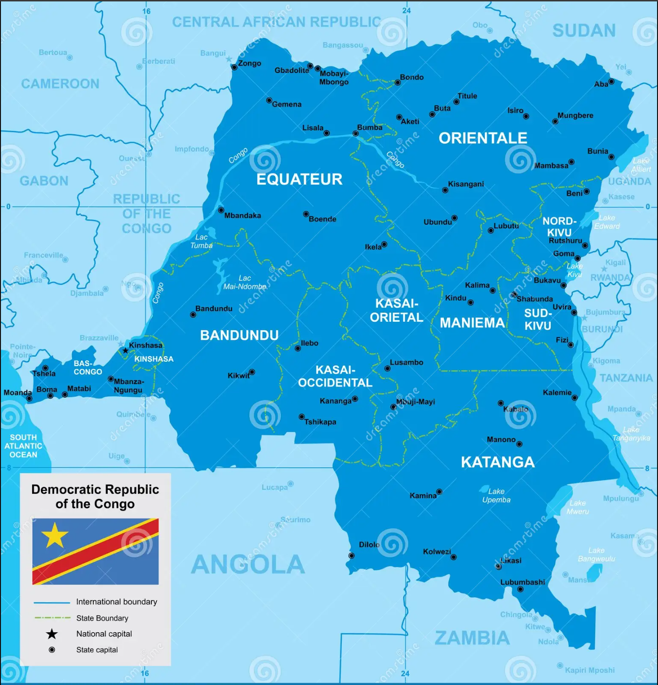

Discover Congo
Located in the heart of Africa, the Democratic Republic of Congo (DRC) is the second-largest country on the continent. With its capital Kinshasa and a population of over 100 million, the DRC is a nation rich in natural resources, cultural diversity, and breathtaking landscapes. From the powerful Congo River to dense tropical forests, the DRC offers extraordinary adventures and discoveries. Its natural parks, wildlife, and cultural traditions make it one of Africa’s most fascinating destinations.
